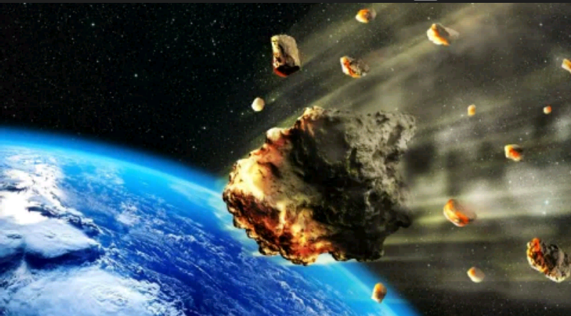
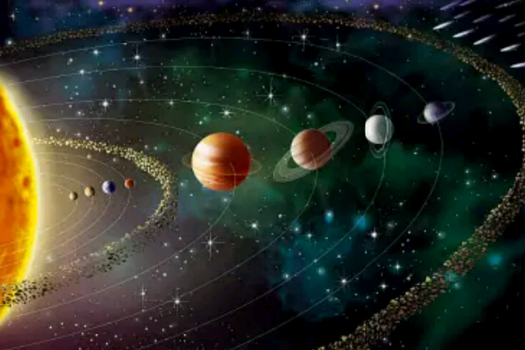
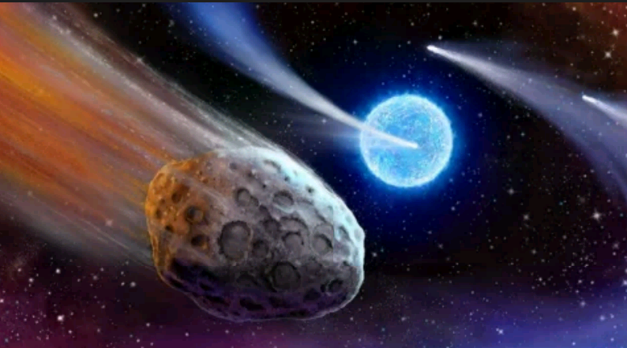
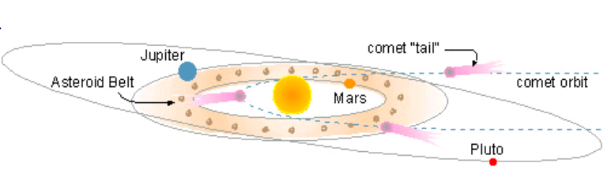

NEAR EARTH OBJECTS

• NEOs (near Earth objects) are asteroids or comets with an orbit that brings them relatively close to Earth.
• Asteroids originate in the asteroid belt between Mars and Jupiter; comets are formed beyond the limits of our solar system.
• There are over a thousand NEOs with a diameter of 1 km or more and millions of smaller objects.
• Asteroids that reach Earth's surface are termed meteorites and are composed of materials similar to those of our planet's core, mantle, and crust
The term near Earth object (NEO) is used to refer to objects such as asteroids or comets that approach Earth. Asteroids originate in the asteroid belt, a relatively dense jumble of cosmic debris that lies in orbit between Mars and Jupiter.  The gravitational attraction of nearby Jupiter jostles asteroids from their consistent orbit causing them to crash into one another. These collisions can send small asteroids or crash debris looping through space toward the inner planets. These materials follow eccentric orbits and can plunge into any of the terrestrial planets, leaving impact scars that can still be observed today. An asteroid on a course to collide with Earth is termed a meteoroid. The actual object that strikes Earth's surface is termed a meteorite. Therefore, meteorites and asteroids are essentially the same thing, just in different locations. Asteroids range in size from little more than space dust to nearly 1,000 km in diameter
COMETS
 Comets originate beyond the margins of our solar system and approach the Sun on wide elliptical orbits. Like the distant Jovian planets located far from the Sun's heat, much of a comet's mass is composed of ice, probably surrounding a rocky core. The ice evaporates as the comet approaches the interior of the solar system, forming a trailing tail that points away from the Sun in the direction of the solar wind. Although comets do not collide with Earth as frequently as asteroids the consequences of an impact would be just as catastrophic. A mysterious 1908 explosion in Tunguska, Siberia, has been attributed to the air blast of a comet that disintegrated in the atmosphere a few kilometers above the land surface. The blast left no crater but flattened forests over an area of 2100 square kilometers (840 square miles) and would be sufficient to lay waste to the largest urban areas on Earth.
 Meteorites that strike Earth's surface originate in the asteroid belt between Mars and Jupiter. Comets originate beyond our solar system. Comet "tails" are oriented away from the Sun and indicate the direction of the solar wind. Pluto's orbital path is inclined relative to the orbits of the other planets.